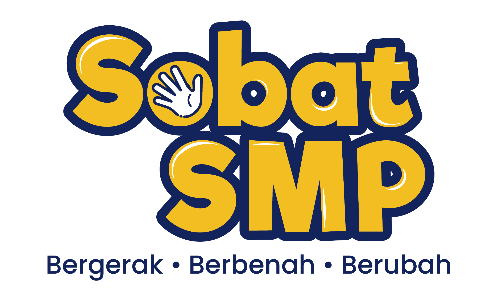

Jadilah detektif data. Baca buktinya, pilih grafik yang tepat, lalu buktikan alasanmu.
Pilih berkas kasus terlebih dahulu di panel sebelah kanan.
Tabel buktinya akan terbuka di sini.
Periksa tabel di sebelah kiri. Bagian mana dari tabel itu yang berisi data yang diminta misi?
Geser slider atau ketik langsung angkanya di kotak sebelah kanan.
Alasan wajib diisi sebelum jawaban dapat diperiksa.